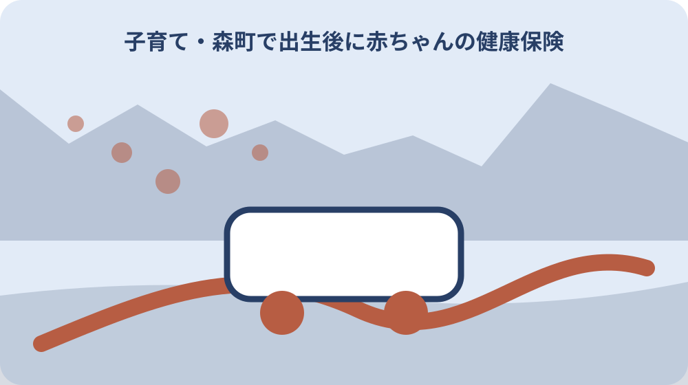
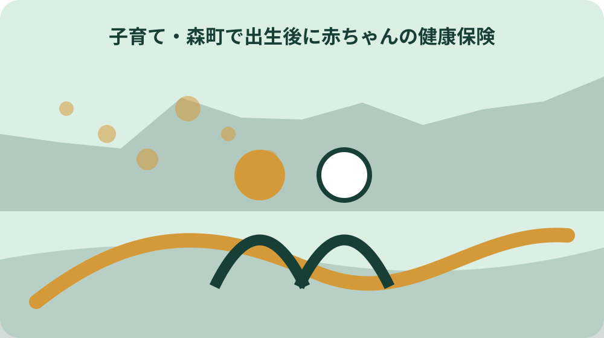

先に結論を確認する
この記事の答え：出生届とは別に、国民健康保険なら森町住民生活課国保年金係、その他なら保護者の勤務先等で健康保険加入を進めます。加入先の資格情報を確認した後、森町健康こども課へこども医療費受給者証を申請し、受付日・不足資料・交付日を別々に記録します。
森町で最初に照合する条件：出生届、健康保険加入、こども医療費受給者証を同じ手続にまとめず、提出先・受付日・不足資料を三つの行へ分ける。
結論は保険加入と医療費助成を二段階でつなぐ
赤ちゃんが生まれた後の医療手続は、出生届を出しただけでは完了しません。まず子どもを加入させる健康保険を確認し、その保険者で加入手続を進め、資格情報を森町のこども医療費受給者証へつなぎます。一枚の進行票に三つの受付を別行で置きます。
進行票の列は手続名、提出先、受付日、必要資料、受付番号、追加資料、資格情報の受領日、受給者証の交付日、初回受診日にします。受付済みと利用できる状態を同じチェックにせず、次に誰が何を待つかまで記録します。
この記事の直接回答は、国民健康保険なら森町住民生活課国保年金係、それ以外は保護者の勤務先等で加入手続を行い、その後に健康こども課へこども医療費受給者証を申請することです。加入先が決まらないまま両方へ同じ届を出しません。
完成物は出生後の全手続一覧ではなく、健康保険加入から受給者証、初回受診、必要なら払い戻しまでを再現する一件票です。児童手当や出生届の詳細は別の案内へ分け、保険資格と医療費助成の証拠だけを同じファイルへ綴じます。
進行票の先頭には子どもの氏名と生年月日だけでなく、加入先の回答を得た日と回答元を置きます。家族の記憶ではなく、どの保険者と森町のどの窓口が次の資料を求めたかをたどれる形にすると、産後の担当交代でも同じ説明を繰り返さずに済みます。
出生届と健康保険加入を別の受付として残す
森町は出生届を父母の本籍地や所在地、子の出生地の市区町村へ提出できると案内しています。出生届の提出先と健康保険の加入先は一致するとは限りません。進行票では出生届受理日と保険加入受付日を別の欄にします。
出生届では母子健康手帳を持参し、出生届出済証明書欄へ記載を受ける案内があります。母子健康手帳の記載は出生の記録であり、健康保険資格や受給者証そのものではありません。手帳を提示したことだけで保険加入済みと印を付けません。
出生届を森町以外へ出した場合は、森町側へいつ情報が届くか、健康保険手続で何を示すかを担当窓口へ確認します。戸籍記載の完了時期を家族だけで予想せず、出生届の受理証明等が必要かを加入先ごとに尋ねます。
夜間や休日に出生届を提出したときは、預かり日、審査後の連絡先、母子健康手帳への記載方法を確認します。翌開庁日に健康保険や医療費助成へ自動で渡ると決めつけず、各窓口の受付状況を一行ずつ更新します。
出生届の控え、母子健康手帳、病院から受け取った書類は同じ封筒に入れても、提出先別の小袋へ分けます。原本をどこへ提出したか、返却されたか、次の手続では写しでよいかを記録し、必要な原本を別窓口へ持参できない事態を避けます。
国保か勤務先等の保険かを最初に分岐する
森町の出生時案内は、国民健康保険なら住民生活課国保年金係、それ以外なら保護者の勤務先等で手続するよう示しています。父母それぞれの加入制度、勤務先、保険者名、連絡先を確認し、子どもの加入候補を二本の経路へ分けます。
森町国民健康保険は、他の健康保険の被保険者や被扶養者を国保加入者から除くと案内しています。勤務先等の健康保険で被扶養者となる可能性があるのに、急ぐためという理由だけで国保加入へ固定しません。双方の保険者へ順序を確認します。
国保に該当する場合、森町は子どもが生まれたときを加入の異動届の一つとして挙げ、異動後14日以内の届出を案内しています。進行票には出生日、相談日、提出日を別に置き、期限の最終日を自己計算だけで確定しません。
勤務先等の保険では、会社の人事担当、健康保険組合、協会けんぽ等で必要資料や受付方法が異なります。勤務先へ連絡した日だけで申請済みにせず、保険者へ届いた日、不足資料、資格認定日、資格情報の受領日を追います。
父母のどちらかが国保、もう一方が勤務先等の保険という場合も、単純に収入額だけで加入先を決めません。国保年金係と勤務先側保険者へ同じ家族状況を伝え、被扶養者認定の可否と国保届の要否を確認した順番を残します。

共同扶養の確認を収入だけで確定しない
父母がともに勤務先等の健康保険へ加入している場合は、どちらの被扶養者にするか確認が必要です。厚生労働省の共同扶養通知は年間収入が多い方の被扶養者とする原則を示しますが、家族が給与明細だけで最終認定しません。
年間収入の見込み、育児休業、収入差、主として生計を維持する人の判断は保険者の認定に関わります。父母双方の保険者名、照会日、伝えた条件、回答、追加資料を左右二列に残し、回答が違う場合はそのまま記録します。
共同扶養通知は、主として生計を維持する人が育児休業等を取っても、既に被扶養者となっている人を原則として異動しない取扱いも示しています。この事実を新生児の加入先が必ず同じになるという断定へ広げません。
加入先が未確定の間に受診予定があるときは、決定を待って受診を遅らせません。医療機関と候補の保険者へ事情を伝え、当日の支払い、資格確認後の精算、必要な領収書や明細の形式を先に確認します。
保険者から追加資料を求められたら、資料名、対象期間、提出方法、回答期限を書きます。口頭説明を家族内で短く言い換えると条件が抜けるため、回答の要点を読み返し、分からない語はその場で確認して未確認のまま受給者証申請へ流しません。
加入先ごとに受付日と資格情報を記録する
加入申請の受付票には、子どもの氏名、生年月日、加入先、申請者、受付日、保険者の連絡先を置きます。個人番号や口座の暗証情報を家族共有版へ複写せず、原本の保管者と必要時に持参する資料だけを記します。
森町のこども医療費助成ページは、健康保険情報として資格情報のお知らせ、資格確認書、マイナポータルから取得した資格情報画面を挙げています。従来の保険証という呼び方だけで資料を探さず、現在の発行物を確認します。
資格情報の受領前は、受付済み、審査中、不足資料あり、認定済み、資料受領済みを別の状態にします。勤務先へ提出した日を資格取得日だと書き換えず、保険者が示した認定日と文書の受領日をそれぞれ記録します。
氏名表記や住所、扶養者情報に誤りがあれば、受給者証申請へそのまま転記しません。保険者へ訂正方法を確認し、訂正依頼日と再発行待ちを残します。医療費助成側へ先に出せる資料があるかは健康こども課へ尋ねます。
オンラインで資格情報を確認した場合は、取得日と確認した保険者名を記録します。画面の保存や家族共有は必要最小限にし、個人番号やログイン情報を台帳へ貼りません。窓口提示用の資料形式が使えるかは森町の最新案内へ合わせます。
こども医療費受給者証は保険加入後につなぐ
森町のこども医療費助成は、森町に住所があり健康保険の扶養となる0歳から18歳到達後最初の3月31日までの子どもを対象として案内しています。出生後の進行票では、住所と保険資格を確認して受給者証申請へ進みます。
受給者証の発行申請には保護者と子どもの健康保険情報を確認できる資料が案内されています。資格情報の到着待ちなら、申請を放置せず、何を先に提出できるか、後日追加できるか、健康こども課こども家庭係へ確認します。
申請行には提出日、提出資料、窓口、受理確認、不足資料、受給者証の交付日、有効期間を置きます。申請書を記入しただけで交付済みとせず、実物または町の案内を確認した日に利用可能へ状態を変えます。
保護者名、住所、健康保険等に変更があった場合は変更手続が案内されています。出生直後の申請時点だけで台帳を閉じず、保険変更や転居があれば旧情報を消さずに変更日と新しい資格情報を追加します。
受給者証を受け取ったら、子どもの氏名、有効期間、登録された保険情報を確認します。誤記や保険変更待ちがあれば使用前に健康こども課へ相談し、家族が書き込んで直しません。交付日と初回利用日を別の欄にして保管袋へ戻します。
県内受診で提示するものを一組にする
森町は県内医療機関と処方せん薬局でこども医療費受給者証を使用でき、受診のたびに窓口へ提示するよう案内しています。初回受診袋へ受給者証と健康保険資格を確認できるものを一組にし、診察券等は医療機関の案内に従います。
受給者証だけを提示して健康保険資格の確認が不要になるとは扱いません。逆に資格情報だけを示して森町の助成が自動適用されるとも考えません。二つの資料の役割を分け、窓口で確認された結果を受診日ごとに残します。
森町は入院と通院の保険診療分について自己負担無料と案内していますが、健診費、予防接種料、薬の容器代、文書料等の保険外費用は対象外です。会計があったときは助成漏れと決めつけず、費目を明細で確認します。
薬局を利用する場合も、処方せん、受給者証、資格情報の提示について薬局の案内を確認します。受診日と調剤日が違うときは二行にし、医療機関の領収書と薬局の領収書を同じ番号で束ねながら発行元を分けます。
初回受診後は、受付で実際に提示した資料、自己負担の有無、次回も必要な資料を記録します。提示できたという経験を他の医療機関や県外受診へ一般化せず、受診先が変わるときは新しい窓口へ事前確認する行を作ります。
資格情報や受給者証が間に合わない受診を記録する
出生直後は資格情報や受給者証の交付前に受診することがあります。交付待ちを理由に必要な受診を遅らせず、受診前に医療機関、加入先の保険者、森町健康こども課へ連絡し、当日の支払いと後日の精算方法を確認します。
進行票には受診日、医療機関、提示できた資料、窓口で受けた説明、支払額、領収書番号、資格情報交付後の連絡先を記します。口頭で後から戻ると言われた場合も、誰へいつ何を示すかを確認し、確定額は記入しません。
領収書と診療明細は受診日ごとの封筒へ入れます。レシートだけでなく保険診療分が分かる領収書が必要になる場合があるため、氏名、受診日、医療機関名、費目をその日に確認し、不足は会計窓口へ相談します。
資格認定後は、医療機関での精算か、加入先保険者の給付か、森町の払い戻しかを一つずつ確認します。同じ領収書を複数制度へ重ねて請求せず、原本を提出した先、写しを保管した場所、返却の有無を記録します。
支払いに使ったカード明細や家計簿は、医療機関が発行する領収書の代わりにはしません。精算が終わるまで原本を受診日順に保管し、返金を受けた日、方法、金額、未処理の費目を記録して二重請求や未精算を防ぎます。
県外受診と払い戻し期限を一件ずつ管理する
森町は県外の医療機関で受診した場合や受給者証を提示できなかった場合、窓口で保険診療分の自己負担を支払い、後日払い戻し申請する取扱いを案内しています。県外受診行には受診日を期限の起点として置きます。
払い戻し申請の期限は受診日または入院日から1年以内です。複数の受診を月単位の合計へまとめず、それぞれの受診日、期限管理日、提出目標日を一行にします。最終日を自己計算だけで決めず、実行前に町へ確認します。
必要物として受給者証、保険診療分を確認できる領収書、子どもの健康保険情報、保護者名義の通帳等が案内されています。通帳の暗証情報は写さず、名義と資料保管者だけを台帳へ置きます。
申請後は提出日、受付確認、不足書類、町からの連絡、振込確認を残します。支払額の全額が対象になると先に決めず、保険診療分、保険外分、他制度の給付を分け、町が確認した内容を実績欄へ追記します。
入院が複数日にわたる場合は、入院日、退院日、請求書の期間、申請期限の確認日を残します。外来と同じ一日分の行へ押し込まず、町へ期限の数え方と必要書類を確認して、退院後に集める書類を家族担当へ割り当てます。

保険外費用と他制度の給付を同じ欄にしない
こども医療費助成はすべての支払いを無条件で返す制度ではありません。森町は健診、予防接種、容器代、文書料などの保険外負担を対象外として挙げています。領収書の合計だけで助成対象額を計算せず、費目を分けます。
学校や園の管理下でのけが、交通事故等の第三者行為、公費負担医療、補装具等は別の確認が必要になると森町が案内しています。新生児期の台帳でも、将来の受診で別制度が関係したら受給者証だけで処理しません。
加入先の健康保険から高額療養費や療養費等の給付を受ける可能性がある場合は、先にどの給付を申請するかを保険者と町へ確認します。給付決定通知が必要な手続では、決定前の自己計算額を森町の申請額にしません。
会計書類の索引には保険診療、保険外、他制度確認中、森町申請済みという状態を付けます。分からない費目は対象外へ追いやらず未確認にし、医療機関、保険者、森町のどこへ聞くかを次の担当欄へ残します。
領収書の費目と制度の対象が分からないときは、診断内容を家族が推測して分類しません。医療機関には請求内容、保険者には保険給付、森町には助成の扱いを尋ね、三者の回答日を並べてから最終状態を確定します。
大石の視点：受付済みと利用可能を分ける
ここからは森町や厚生労働省の公式見解ではなく、私、大石浩之の実務上の提案です。私は出生後の書類を提出済みの一語で管理せず、受付、審査、資格認定、資料受領、利用開始の五段階へ分ける方が取り違えを減らせると考えます。
公的事実は、国保と勤務先等で加入先が分かれること、国保の届出案内、こども医療費助成の対象と提示方法、払い戻し期限です。私の提案は、それらを一件票へ並べ、家族が次の待ち先を確認する方法です。
不動産の名義変更でも、登記申請日と完了日、固定資産台帳への反映日を同じ日にしないことが重要です。赤ちゃんの手続でも、会社へ連絡した日と保険資格が認定された日、受給者証を使える日を分けると、窓口での説明が再現しやすくなります。
きれいな台帳を完成させることより、必要な受診を止めないことが優先です。資料が間に合わないときは未確認欄のまま相談し、支払い書類を残します。保護者の負担が大きければ、次の連絡先、期限、保管袋の三列だけへ縮めます。
私は家族間の引継ぎでは『誰が悪くて遅れたか』ではなく、『現在どこで審査中か』を書く方が役立つと考えます。産後の体調と生活を優先し、窓口への連絡を代われる家族が、本人の同意の範囲で必要情報だけを扱う形にします。
確認日と家族担当を更新して初回受診へ渡す
最終確認では、加入先が決まったか、加入申請が受理されたか、資格情報を受け取ったか、受給者証を申請・受領したかを読み上げます。未完了の行には次の連絡日、担当者、必要資料を置き、空欄のままにしません。
初回受診袋には、医療機関が案内した持ち物、健康保険資格を確認できるもの、こども医療費受給者証を入れます。まだ無い資料は『交付待ち』と明示し、受診先へ連絡済みかを確認します。原本を家族全員へ複写しません。
家族担当は勤務先保険への連絡、森町国保への相談、健康こども課への申請、領収書保管に分けます。一人が複数担当しても、提出先と期限を混ぜません。担当変更日を残し、古い共有先に個人情報が残らないよう見直します。
台帳を閉じる条件は、資格情報と受給者証の利用確認、未精算受診の有無、払い戻し期限、保険変更予定の四点が確認できることです。公式ページの更新日と窓口確認日も残し、次の受診や転居時に同じ条件を再確認できる形で保管します。
閉じた後も保険変更や転居、氏名変更があれば新しい版を作ります。古い受給者証の返却要否、新しい資格情報の反映日、医療機関へ示した日を追記し、過去の領収書と現在使える資料を同じ袋で取り違えないよう区切ります。